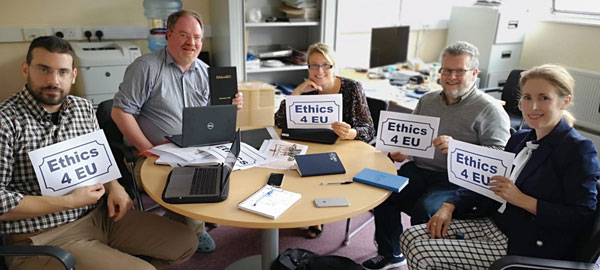

‘Digital Ethics’ is the focus of a new European project being led by TU Dublin’

Dr Deirdre Lillis and Dr Dympna O’Sullivan of the School of Computer Science at TU Dublin explore the ethical challenges that are now facing educators in the field of Computer Science and how a new project Ethics4EU aims to tackle these ethical dilemmas.
Should parents post photos of their children on social media without their consent? If an algorithm assigns an employees’ workload, who is the employer? Facial recognition is being used to target customers on the high street, are shoppers aware of this? These are just some of the ethical dilemmas to be explored in a ground-breaking European project being led by TU Dublin Computer Science. The project is called ‘Ethics4EU’ and it is being led by the School of Computer Science at the newly established Technological University of Dublin.

The Ethics4EU project team in TU Dublin - Yannis Stavrakakis, Damian Gordon, Dympna O’Sullivan, Brendan Tierney and Andrea Curley.
The Ethics4EU project is funded by the Erasmus+ Strategic Partnership and it aims to develop new curricula, educational best practices and learning resources in digital ethics for computer science students. Digital ethics has become a critical dimension to Computer Science graduate competencies, says Dr. Deirdre Lillis, Head of TU Dublin Computer Science. “Given the types of intelligent systems with societal impact that computer science students will develop, it is vital that computer science professionals consider the ethical aspects of their work and how it impacts people's lives.”
TU Dublin will partner with experienced European researchers in this field including Informatics Europe (Switzerland), Mälardalens University (Sweden), Institut Mines-Telecom/Télécom SudParis (France), and the D-Learn (Italy) network. All partners will leverage their extensive industry engagement networks to ensure that the competencies developed match the needs of industry in this evolving area. Ultimately, it is hoped that it will result in the creation of a vibrant European ‘community of practice’ in digital ethics that will harmonize the understanding of digital ethics, their usefulness and their implementation.
TU Dublin Computer Science 2019. For further information please contact Peter Manifold at (peter.manifold@tudublin.ie)